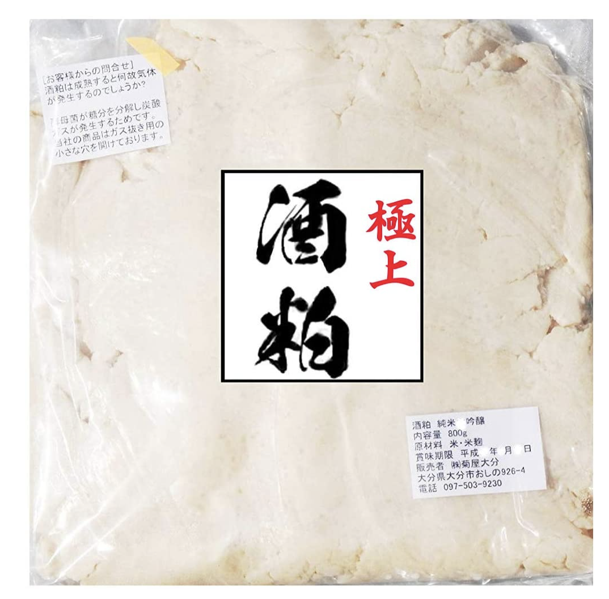
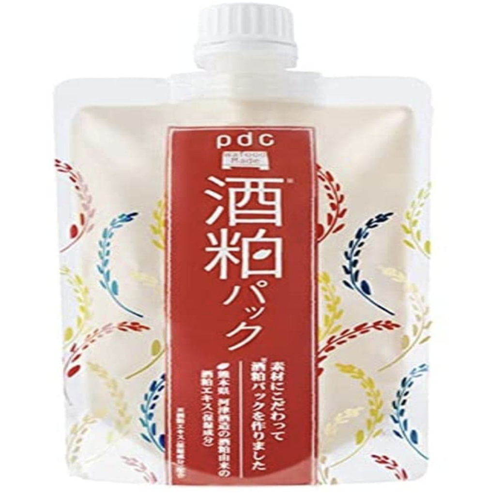

美白効果がある酒粕って何？？
酒粕の体への効果や、より効果的な摂取方法を伝授！
01 酒粕って何？
酒粕は、清酒(例：日本酒なども含む)を作る際の最後の工程、圧力で絞り出す「圧搾」で取れる「搾りかす」のことを指します。
02 酒粕の成分は？
清酒の原料である米を発酵をする原料の麹（こうじ）、酵母由来の炭水化物、たんぱく質、アミノ酸、ペプチド、ビタミンなど様々な美容にまつわる成分が入っています。
それぞれの成分が、美容にどんな効果は下記になります。
美肌効果がある成分♡
ビタミンB群
健康な肌や髪、歯を作る効果があります。
たんぱく質の分解・合成を助け、皮膚や粘膜の健康維持に働かけるため、肌のターンオーバーを促進します。
細胞の再生を促すことになるため、滑らかに整った肌になることができます。
α-EG
糖化とアルコール発酵が同時進行する「並行複発酵」で生み出される、日本酒独自の成分です。
大関総合研究所では、α-EGがヒト皮膚線維芽細胞に対して、
細胞の増殖を促進させる効果や、コラーゲン産生を促進する効果があること、皮膚に塗布することによって短期的な保湿効果があることが明らかになっています。
それにより、肌のキメを細かくする効果が、立証されています。
※大関総合研究所より抜粋。
アルブチン
アルブチンは美白成分として有名で、1989年に医薬部外品、美白有効成分として承認されています。
人の肌は、紫外線に当たるとチロシナーゼの働きでシミの元凶となるメラニンが作られてしまいます。
しかし、アルブチンを摂取するとアルブチンがチロシナーゼの働きを抑制するため、日焼け防止やシミ予防になります。
フェルラ酸
ポリフェノールの一種の成分です。
アルブチンと同じく、チロシナーゼの働きを抑制する＋有害な紫外線の吸収性もあり、紫外線から肌を守る働きもあります。
食品添加物の酸化防止剤としても使われるほど酸化にも強いフェルラ酸は、肌の酸化によるシミ・ソバカスも防ぐことができます。
また、フェルラ酸はアルツハイマー病を予防する効果もあります。
傷んだ脳細胞を修復し、細胞が死んでしまうことを防いでくれる脳細胞保護作用があるため、学習記憶向上作用もあります。
コウジ酸
アルブチン・フェルラ酸と同じく、チロシナーゼの働きを抑制する作用がありしみやそばかすを抑える効果があります。
またコウジ酸ならではの特徴なのですが、メラニンの生成が始まる前に先まわりし、早い段階から抑制のアプローチをかけることができる点があります。
また、シワやたるみを引き起こす活性酸素や炎症の発生を抑える作用もあるとされています
デフェリフェリクリシン（ペプチドの一種）
米麹に含まれるデフェリフェリクリシンは、ビタミンEより強いメラニン抑制効果を示し、さらにビタミンCよりも強い美白作用があります。
※月桂冠総合研究所の研究レポートより抜粋。
肥満予防の成分♡
難消化性でんぷんと難消化性たんぱく質
酒粕に含まれる難消化性でんぷんが糖の吸収を抑え、難消化性たんぱく質が食事で摂った脂肪やコレステロールを体外へ排出します。
また、悪玉コレステロールの生成や脂質の酸化を抑える効果もあり、過剰なコレステロールを肝臓に戻す作用も期待できます。
腸内環境が整う成分♡
オリゴ糖
善玉菌の増殖を促し、腸内環境を整えます。
食物繊維
酒粕に含まれる不溶性の「食物繊維」が、 腸内の余分な老廃物を排出します。
その他にも、高血圧の抑制・アレルギー体質の改善を促すペプチドが含まれていたり、肩こり・頭痛・冷え性を改善するアデノシンが含まれていたりと、
体に良い影響をもたらす様々な成分が入っています！
03 酒粕はどうやって取り入れるのがベスト？
甘酒など体の内側から服用しても、酒粕パックなどで外から取り入れても効果があると言われています！
04 酒粕のオススメ美容製品5選
極上酒粕 800g

筆者自身もリピートしている、購入をした酒粕甘酒の原料800gです！
口コミが多く、甘酒にした時の味がちょうど良い甘さということで評判です！
筆者は、甘酒として毎日飲むのとプラスで、パックとしても使用しています。
タッパに入れて使用すると、普段使いしやすいです！
ワフードメイド SKパック

筆者自身もリピートしている、購入をした酒粕パックになります！
手軽に試したい方、まずは習慣化したい方にはぜひ試してみて欲しいです！
パック以外では、化粧落とし・洗顔でも同じシリーズがありますので、今使用している物から置き換えるのもアリです！
05 まとめ
酒粕は数年前から注目されてきた美容食品ですが、今も尚人気が絶えず健在で様々な美容製品に使用されています。
長く愛されているこの成分を、自分の美活に存分に生かしていきましょう！
会員のみんなで素敵なボディを目指しましょう！
TOPへ戻る